| [ Team LiB ] |
|
4.4 Discrete-Time Autoregressive ModelsMost of the models developed and used in this text are based on continuous time. In the most general case of fundamental models, these are nonlinear ordinary differential equations. State space models consist of sets of linear ordinary differential equations, where the states and inputs are in deviation variable form. Transfer functions are used to denote a linear relationship between inputs and outputs. All these previous models assume that the manipulated input and the measured output signals are continuously available. In practice, manipulated input changes are made at discrete time intervals and measured outputs are available at discrete sample times. The physical inputs and outputs are continuous; only the changes and measurements occur at discrete times. Since the focus of this textbook is on controller design based on continuous models, the topic of discrete models may be skipped on a first reading. Discrete models are primarily useful for model predictive control (Chapter 16) and digital control design and analysis (Module 16). In this section we cover discrete autoregressive models, in Section 4.5 parameter estimation of discrete autoregressive models is covered, and in Section 4.6 we cover finite step and impulse response models. It should be noted that the MATLAB Control Toolbox has routines that convert continuous-time models to discrete and vice versa. The details of the conversion are beyond the scope of this text, but are summarized in the appendix; read Module 4 for explanations on how to use these routines. Introduction to Autoregressive ModelsDiscrete autoregressive models assume that an output at the current time step is a function of the outputs and inputs at previous time steps. The general form is 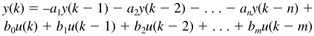 where k represents the current time step, k - 1 the previous time step, and so forth. The notation y(k) is used to indicate the value of the output at step k. If all of the outputs are brought to the left hand side, Equation (4.5) can be written 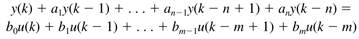 This form is primarily used to lead to the notion of discrete input-output transfer functions covered next. Z-TransformsSimilar to the use of Laplace transforms for continuous systems, Z-transforms are used for discrete systems. The Z-transform of a discrete variable, y(k), is 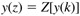 The so-called backwards shift operator (z-1) is represented by 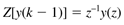 so Z[y(k - 2)] = z-2y(z), and so forth. Taking the Z-transform of each term in Equation (4.6), we find 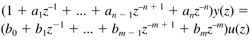 Solving for y(z) yields the discrete transfer function relationship 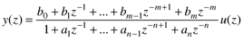 where the discrete transfer function is 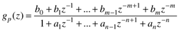 The discrete transfer function is the discrete-time analogy to the continuous-time transfer function based on the Laplace transform. Similar to continuous (Laplace) transfer functions, discrete (z-transform) transfer functions can be written in several forms. Multiplying Equation (4.11) by zn/zn, we find 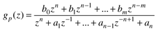 For most process systems there is not an immediate effect of the input on the output, so b0 = 0. Poles/Zeros of Discrete ModelsRecall that the stability of a continuous input-output (transfer function) model is determined by the values of the poles (the roots of the denominator polynomial in s). If the poles are negative, then the model is stable. Similarly, the stability of a discrete input-output model is determined by the poles of the denominator polynomial in z. For a discrete-time model, if all poles have a magnitude less than 1 (i.e., they are "inside the unit circle") the model is stable. If any pole has a magnitude greater than 1, the model is unstable. The polynomial forms of Equations (4.11) and (4.12) can be factored into gain-pole-zero form 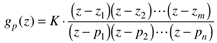 where zi and pi are the zeros and poles, respectively. Example 4.3: Discrete Poles and StabilityConsider the simple first-order model 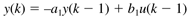 which has the transfer function 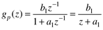 The pole is found by solving for the roots of the denominator polynomial. In this case 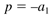 To illustrate the importance of pole values, we will study the following values for a1: 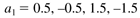 yielding the corresponding pole values 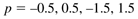 Also, realize that the modeling equation can be written 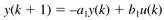 For simplicity, we will assume no input change, so u(k) = 0. Also, let the initial value of the output be y(0) = 1. The first few values of y(k) for each value of a1 are shown in the table below.
As expected, when the magnitude of the pole is less than 1.0, the process is stable; when the magnitude is greater than 1.0, the process is unstable. One thing that is unusual for this first-order discrete example is that the output can oscillate even with a constant (in this case, 0) input value. For continuous-time systems there must be at least two states (the process must be at least second-order) for oscillation to occur. This is because the condition for oscillation in continuous-time systems is that the eigenvalues must be complex; for this to happen, there must be at least two eigenvalues, each complex-conjugates of the other. Discrete time systems can oscillate, as long as a pole has a negative value; if the negative pole has a magnitude less than one, it is a stable oscillation. Final and Initial Values Theorems for Discrete SystemsRecall that the process gain of a continuous system could be determined by setting s = 0. Similarly, the gain of a discrete-time system can be found by setting z = 1. Final Value Theorem for Discrete-Time SystemsThe formal statement of the final value theorem is (where Dt is the sample time) 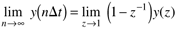 For a discrete-time input-output model 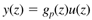 subject to a unit step input 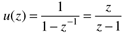 we find 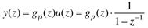 so, applying the final value theorem 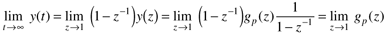 so we can find the long-term behavior of the process output, subject to a unit step input, simply by setting z = 1 in gp(z). Initial Value Theorem for Discrete-Time SystemsSimilarly, the initial value theorem is 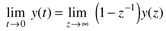 |
| [ Team LiB ] |
|